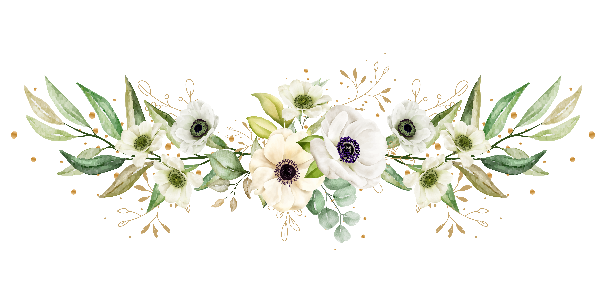
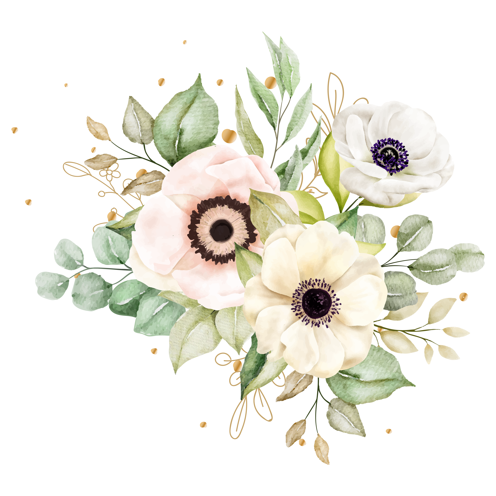
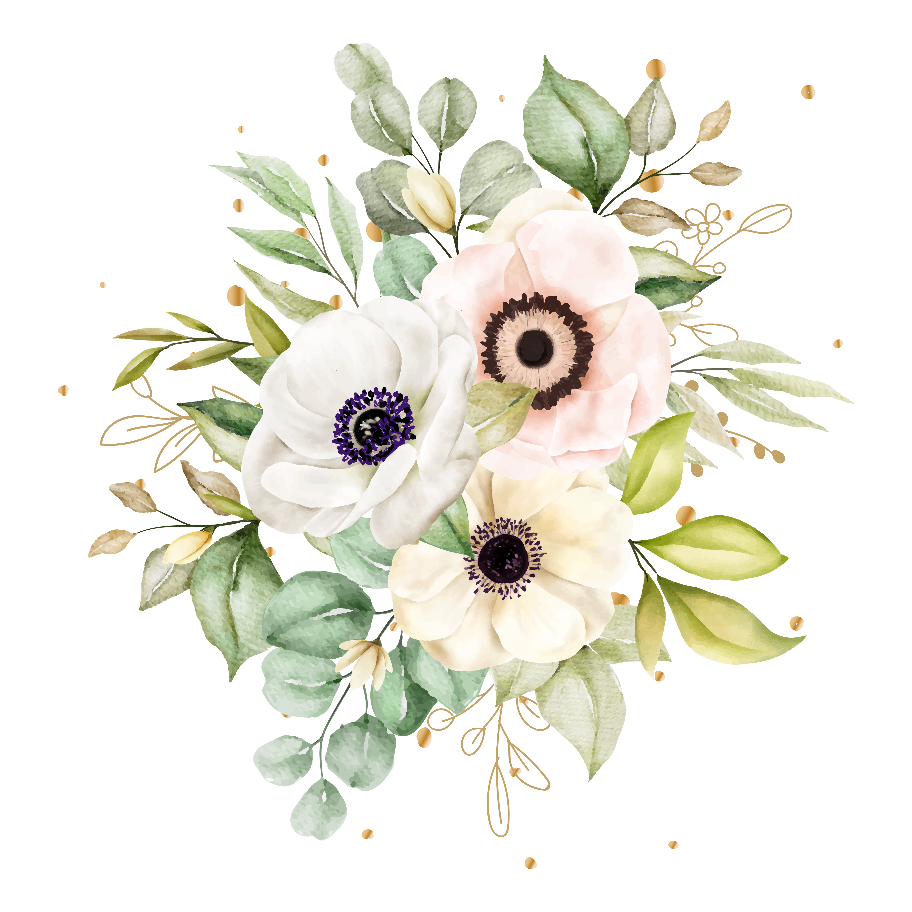
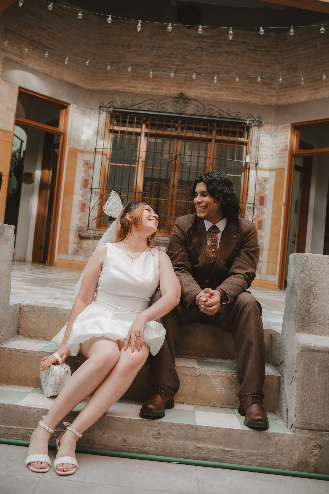

Luis &
Citlalli
11 . JULIO . 2026
Con la bendición de Dios y la de nuestros padres
Padres de la Novia
Luis Francisco Vassio Ortiz
Liliana Gallegos Barajas
Padres del Novio
Blanca Esther Moneda Acosta
Jose Luis Juárez Saldivar




Parroquia Sagrado Corazón de Jesús
5:00 PMArtes Gráficas 1375 Ote
Primero de Cobián Centro

Hacienda Elegancia
8:00 PMSierra Madre Occidental 1011
M. Mercado de López Sánchez

Apreciamos su comprensión al considerar que este es un
EVENTO PARA ADULTOSFORMAL
Caballeros: traje formal.
Damas: vestido de noche.
Favor de evitar blanco, beige o similares, rojo intenso, verde olivo y verde bosque.
Recomendamos vestir en tonos similares a estos:
Asistencia
Para nosotros es muy importante contar con tu presencia. Por favor, confírmanos antes del 15 de junio.
Confirmar por WhatsApp Confirmar por WhatsAppAmazon
Tu presencia es nuestro mejor regalo, pero si deseas tener un detalle con nosotros, te compartimos nuestra mesa de regalos.
Ver Mesa en Amazon